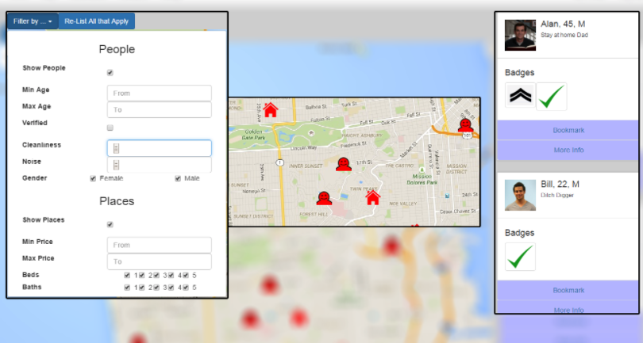

I'm interested in designing beautiful products and solving big problems. Always looking for new opportunities in Software Development and Product Management.
I graduated from Olin College in 2017.
Download my resume, either for software engineering or product management.
Scroll below to see some recent projects I've worked on!
Projects

Olin College SCOPE Fidelity Investments
I spent 2 semesters working on my Senior Capstone project with Fidelity
Investments and a team of 5 Olin students. We designed and prototyped
several blockchain products. Check out our project page here.

Cakebot
I built a CNC platform and software for frosting cakes! This was done during
the Principles of Engineering course at Olin College in 2015. The embedded
control software ran on an Arduino. I created a user GUI in Python that sent
control signals to the Arduino over a serial connection. Users could choose
from several preset patterns, or draw their own.

Roommate Finder
As a final project for a UX design class at Olin College in 2016, my team
designed a roommate finding web application. We conducted user interviews,
designed lots of mockups, and finally built a working frontend prototype
using Bootstrap.
Google Play music import/export tool
I wanted to transfer my library to a new account, and also potentially to
a Spotify account. However, there was no good way to get plaintext data
about my library, and use that data to build a new library with a new
account. This small Python project lets you export your library and
playlist information to JSON, and reimport it into a library. Could potentially
be used in the future to transfer libraries between music services. Check
it out on Github here.